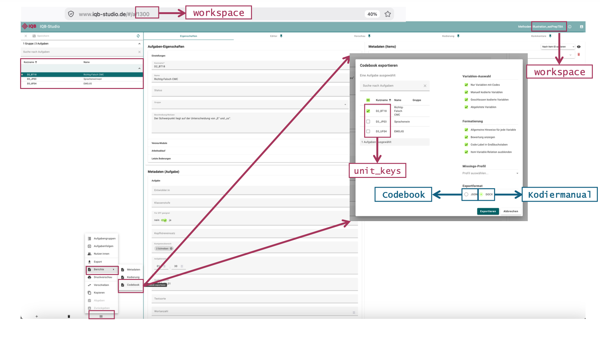
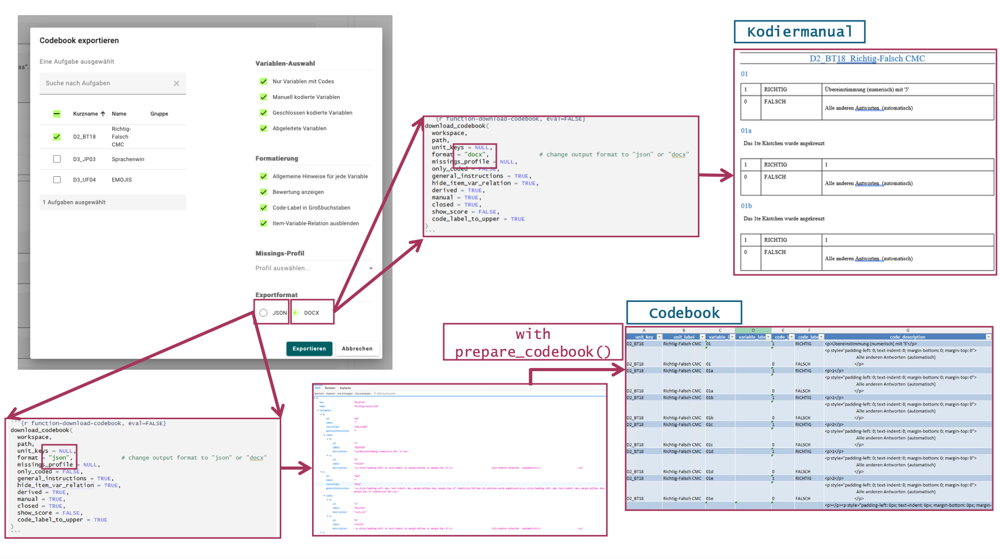
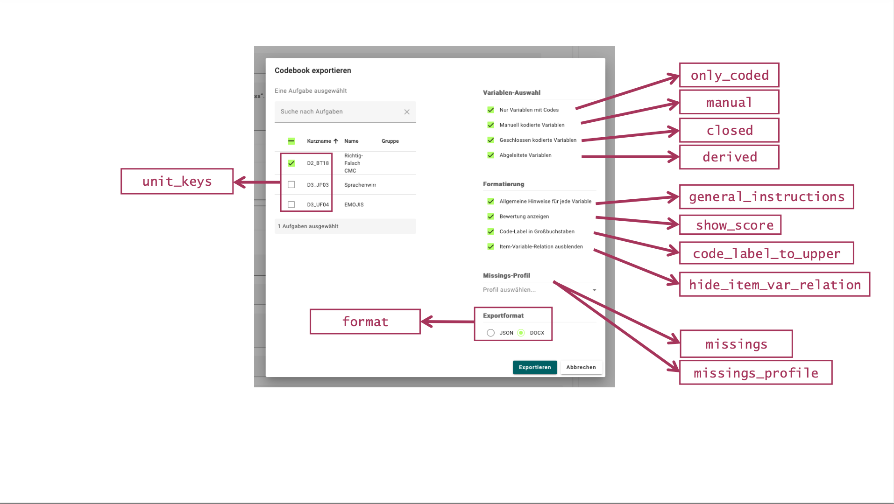
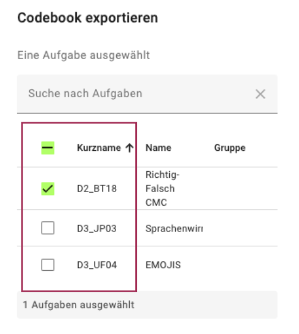
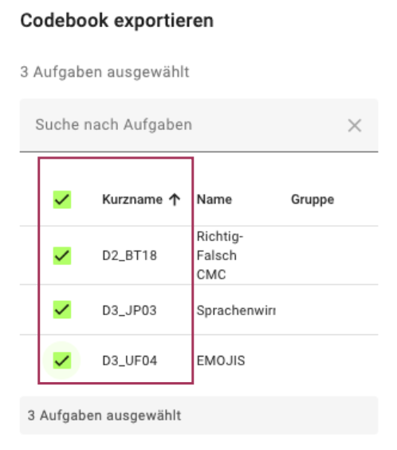
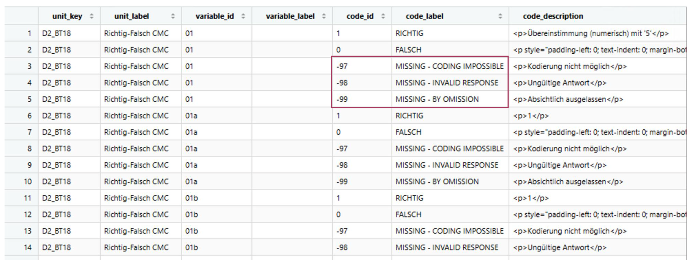

Prepare Codebooks
prepare-codebooks.Rmd
library(eatPrepTBA)
#> eatPrepTBA v0.9.8.9035Overview
This vignette explains how to access, prepare, customize, and export
codebooks from an IQB Studio workspace using eatPrepTBA. It
also explains the difference between a codebook and a coding manual and
shows how to select specific units and add missing-value codes.
Login Procedure
To log in to the IQB Studio, use login_studio(). By
default, credentials are entered in a dialog with masked password input
when a GUI is available. Otherwise, the function uses the console. Use
the same credentials as for your Studio instance, for example https://www.iqb-studio.de.
The example uses Studio version 20.0.1. If your Studio
login page shows a different version, use that value for
app_version. Replace the example workspace ID
1300 with an ID available to your account.
For details on login, storing credentials with keyring,
and selecting workspaces, see the Get
Started page.
login <- login_studio(keyring = TRUE, app_version = "20.0.1")
workspace <- access_workspace(login = login, ws_id = 1300)The screenshots show an earlier Studio version; your interface may look different.

Accessing a workspace codebook
A codebook provides a structured overview of the
coding scheme of a workspace, including its units, variables, and
corresponding codes. It can be accessed either directly in Studio or via
eatPrepTBA.
Accessing a codebook in IQB Studio
To access the codebook manually in Studio, open the respective workspace and navigate to: Berichte → Codebook

The content of the codebook can then be customized by selecting the relevant units, variables, formatting options, and output format.
Selecting JSON as the output format and clicking Exportieren creates a machine-readable version of the codebook.
Codebook vs. coding manual (Kodiermanual)
Studio also allows the codebook information to be exported as a DOCX coding manual (Kodiermanual). For this purpose, follow the same steps under Berichte → Codebook, but select DOCX instead of JSON as the output format.
The two documents serve different purposes:
Codebook: provides a structured overview of the
units, variables, and corresponding codes in a workspace. It can, for
example, be provided to the IEA for coding and evaluation purposes. The
codebook is provided in JSON format but can be transformed into a
human-readable table with eatPrepTBA and exported to
Excel.
Coding manual: provides a human-readable representation of the coding information in DOCX format. It contains the unit key and unit name, the corresponding variables, and instructions on how responses should be coded (e.g., code 1 for a correct response and code 0 for an incorrect response).
Thus, the codebook and the coding manual contain related coding information but are intended for different purposes and stages of the coding process.

Preparing a codebook with eatPrepTBA
The function prepare_codebook() can be used to retrieve
and prepare the codebook of a Studio workspace directly in R.
Information on all available arguments can be displayed with:
?prepare_codebookBy default, prepare_codebook() retrieves coding
information from all units in the selected workspace:
cb <- prepare_codebook(workspace)The content of the codebook can be customized using additional arguments. For example, the following call explicitly specifies the default selection options:
cb <- prepare_codebook(
workspace,
unit_keys = NULL,
missings = NULL,
missings_profile = NULL,
only_coded = FALSE,
general_instructions = FALSE,
hide_item_var_relation = TRUE,
derived = TRUE,
manual = TRUE,
closed = TRUE,
show_score = FALSE,
code_label_to_upper = TRUE
)Many of the arguments correspond to the selection options available under Variablen-Auswahl in the Studio codebook interface. They therefore allow the content of the codebook to be configured directly from R.

For example:
-
unit_keysspecifies which units should be included. -
only_codeddetermines whether only variables with assigned codes should be included. -
general_instructionsrequests general coding instructions from Studio. These are not retained in the table returned byprepare_codebook(). To include them in a coding manual, setgeneral_instructions = TRUEwhen downloading a DOCX file withdownload_codebook(). -
derived,manual, andclosedcontrol which types of variables are included. -
show_scoredetermines whether score information is included. -
code_label_to_uppercontrols whether code labels are converted to uppercase. -
missings_profileselects a missing-value profile configured in Studio by its exact name. Its codes are added to each variable in the prepared codebook. -
missingssupplies your own missing-value codes as a tibble. You can use it on its own or to supplement and override a Studio profile, as shown below.
The resulting object cb contains the prepared codebook,
which is automatically transformed into a tabular format and can
subsequently be inspected or further processed in R.
Selecting specific units
The unit_keys argument of
prepare_codebook() can be used to restrict the codebook to
specific units. By default, unit_keys = NULL, meaning that
all units are included automatically.
cb_D2_D3 <- prepare_codebook(
workspace,
unit_keys = c("D2_BT18", "D3_JP03")
)The Studio interface also supports selecting one or several units:


Alternatively, an already prepared codebook can be filtered
afterwards using dplyr::filter().
An individual unit can be selected using ==:
Several units can be selected using %in%:
Adding missing-value codes
Missing-value codes can be added when specific response categories, such as omitted or invalid responses, should be documented alongside the regular coding categories.
Using a profile configured in Studio
Use missings_profile to select an existing Studio
profile. The name must match the name shown in Studio’s codebook export
dialog, including upper- and lowercase letters. The following example
assumes that a profile named IQB-Standard is configured;
replace it with a profile available in your instance.
cb_profile <- prepare_codebook(
workspace,
missings_profile = "IQB-Standard"
)The function checks that the profile exists before downloading. An
unknown name produces an error listing the available profile names. With
the default missings_profile = NULL, no Studio profile is
selected.
Profile codes are added to each variable in the prepared table.
Studio distinguishes a missing category’s identifier, such as
mci, from its numeric code, such as -97. The
numeric code becomes code_id in the table, stored as text
("-97").
One profile is selected per call. If workspace contains
several workspaces, that profile applies to all of them. To use
different profiles for different workspaces, make separate calls with
the corresponding workspace and profile.
Supplying your own missing-value codes
Define a tibble with columns id, label, and
description and pass it via missings. Here,
id contains the code value as text, for example
"-97". These codes are added locally to each variable in
the returned table; the coding scheme and profiles stored in Studio
remain unchanged.
The following example adds three missing-value codes to each variable:
missings <- tibble::tibble(
id = c("-97", "-98", "-99"),
label = c(
"MISSING - CODING IMPOSSIBLE",
"MISSING - INVALID RESPONSE",
"MISSING - BY OMISSION"
),
description = c(
"<p>Kodierung nicht möglich</p>",
"<p>Ungültige Antwort</p>",
"<p>Absichtlich ausgelassen</p>"
)
)The object can then be passed to prepare_codebook():
cb_withmissings <- prepare_codebook(
workspace,
missings = missings
)
head(cb_withmissings)
Combining a Studio profile with your own codes
You can supply both arguments:
cb_combined <- prepare_codebook(
workspace,
missings_profile = "IQB-Standard",
missings = missings
)If your tibble contains a code ID that is also in the profile, your
entry replaces the profile entry, including its label and description.
Other profile codes are retained, and additional codes from your tibble
are appended. For example, your id = "-97" entry replaces
the Studio entry whose numeric code is
-97.
Exporting the prepared codebook to Excel
The tabular codebook created by prepare_codebook() can
also be exported as an Excel file for easier inspection and sharing.
This example uses the separate writexl package. Install
it once if needed:
install.packages("writexl")
writexl::write_xlsx(cb, "codebook.xlsx")
Downloading the codebook or coding manual directly with eatPrepTBA
The function download_codebook() can be used to export
the codebook or the coding manual directly from R. While
prepare_codebook() retrieves the codebook and transforms it
into a tabular R object for further processing,
download_codebook() saves the codebook or coding manual
directly as a file.
Information on the available arguments can be displayed with:
?download_codebookFirst, choose and create an output directory relative to your current working directory:
path <- file.path("output", "codebooks")
dir.create(path, recursive = TRUE, showWarnings = FALSE)The format argument determines whether a codebook (JSON)
or a coding manual (DOCX) is created.
To download the codebook in its machine-readable JSON format, use:
download_codebook(
workspace,
path,
unit_keys = NULL,
format = "json", # change output format to "json" or "docx"
missings_profile = NULL,
only_coded = FALSE,
general_instructions = TRUE,
hide_item_var_relation = TRUE,
derived = TRUE,
manual = TRUE,
closed = TRUE,
show_score = FALSE,
code_label_to_upper = TRUE
)To download the coding manual in DOCX format, use
format = "docx" instead:
download_codebook(
workspace,
path,
format = "docx"
)To include a Studio missing-value profile in either export format,
also set missings_profile:
download_codebook(
workspace,
path,
format = "docx",
missings_profile = "IQB-Standard"
)download_codebook() uses the profile stored in Studio.
To add your own missing-value codes from an R tibble, use
prepare_codebook(workspace, missings = missings) and export
the resulting table instead.
Summary
In summary, eatPrepTBA provides two ways to work with coding
information from IQB Studio. Use prepare_codebook() if the
codebook should be inspected, filtered, modified, or exported from R.
Use download_codebook() if the original codebook or coding
manual should be downloaded directly as JSON or DOCX.